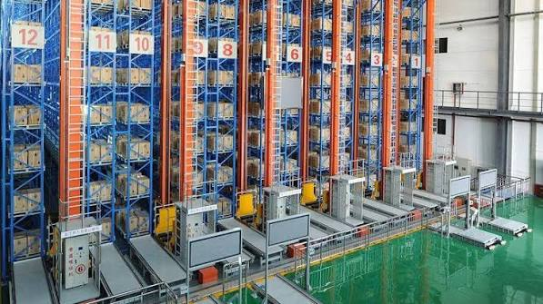

What Is the Difference Between ACR, AMR, and ASRS Systems in Modern Warehouses?
Modern warehouse automation systems are often described using three key terms: ACR, AMR, and ASRS. However, these terms do not represent competing technologies—they represent different layers of a complete warehouse automation architecture. This article provides a technical breakdown of each system, their movement logic, architecture differences, system integration roles, and explains why hybrid ASRS systems combining ACR + AMR deliver the best overall performance in modern logistics environments.

Summary
Modern warehouse automation systems are often described using three key terms: ACR, AMR, and ASRS.
However, these terms do not represent competing technologies—they represent different layers of a complete warehouse automation architecture.
This article provides a technical breakdown of each system, their movement logic, architecture differences, system integration roles, and explains why hybrid ASRS systems combining ACR + AMR deliver the best overall performance in modern logistics environments.
Technology
- Core technologies involved in modern warehouse automation:
- ACR (Autonomous Case/Rack Robots)
- AMR (Autonomous Mobile Robots)
- ASRS (Automated Storage and Retrieval System)
- WMS (Warehouse Management System)
- WCS (Warehouse Control System)
- SCADA visualization system
- High-density racking systems
- Dynamic task scheduling engine
- Fleet management system
- Real-time inventory tracking system
Challenge
Many companies misunderstand warehouse automation technologies by treating ACR, AMR, and ASRS as interchangeable solutions.
This leads to:
Incorrect system selection
Poor warehouse performance design
Bottlenecks in material flow
Underutilized automation investment
Lack of scalability
A clear technical understanding is essential for system-level design decisions.
Solution
A modern warehouse should not rely on a single technology.
Instead, it should adopt a layered automation architecture:
ASRS defines the system framework
ACR handles storage execution
AMR handles transport execution
WMS/WCS manage intelligence and coordination
This creates a fully integrated warehouse ecosystem.
Workflow & Layout
Typical ASRS warehouse flow:
Step 1: Inbound Processing
Goods are received, scanned, and registered into the WMS system.
Step 2: Storage Execution (ACR Layer)
ACR robots perform:
Bin storage
Deep rack retrieval
High-density slot optimization
Step 3: Transport Layer (AMR System)
AMR robots handle:
Horizontal movement
Zone-to-zone transfer
Buffer and staging transport
Step 4: System Coordination (WCS Layer)
WCS controls:
Robot task assignment
Traffic optimization
Real-time execution control
Step 5: Order Fulfillment
System retrieves and transports goods based on order demand.
Step 6: Outbound Dispatch
Products are packed and shipped automatically.
Results & ROI
- Operational Performance:
- Throughput: 300–600 bins/hour (system dependent)
- Continuous 24/7 operation capability
- High system stability under peak load
- Efficiency Gains:
- 200–400% improvement vs manual warehouse systems
- Faster order processing cycles
- Reduced bottlenecks
- Labor Reduction:
- 50–70% reduction in manual operations
- Shift from labor-intensive to system-managed operations
Equipment List
- ACR System Components:
- Autonomous storage robots
- High-density racking system
- Storage control modules
- AMR System Components:
- Mobile transport robots
- Navigation and routing system
- Fleet coordination platform
- ASRS System Components:
- Integrated warehouse architecture
- WMS/WCS control systems
- SCADA visualization platform
- Inventory management system
Project Overview / Opening
Warehouse automation is not defined by individual machines, but by system architecture design.
ACR, AMR, and ASRS are not competing technologies—they are complementary layers that together form a complete intelligent logistics system.
Understanding their differences is essential for designing scalable and efficient warehouse operations.
Key Points
- 1️⃣ What Is ACR?
- ACR (Autonomous Case/Rack Robot) is responsible for:
- High-density storage operations
- Vertical rack navigation
- Bin-level retrieval
- Strength:
- High storage efficiency
- Strong scalability in dense warehouses
- 2️⃣ What Is AMR?
- AMR (Autonomous Mobile Robot) is responsible for:
- Horizontal transportation
- Flexible routing
- Cross-zone movement
- Strength:
- High flexibility
- Easy deployment and expansion
- 3️⃣ What Is ASRS?
- ASRS (Automated Storage and Retrieval System) is the complete warehouse system framework, including:
- Storage systems
- Transport systems
- Software intelligence layer
- It is not a single machine—it is a full architecture.
- 4️⃣ Architecture Comparison
- ACR → Storage execution layer
- AMR → Transport execution layer
- ASRS → System-level integration framework
- 5️⃣ Movement Logic Difference
- ACR moves vertically inside racks
- AMR moves horizontally across warehouse zones
- ASRS coordinates both through system intelligence
- 6️⃣ System Integration Layer (WMS / WCS / SCADA)
- WMS (Warehouse Management System):
- Order processing
- Inventory control
- Task planning
- WCS (Warehouse Control System):
- Real-time robot coordination
- Execution control layer
- SCADA:
- Visualization
- Monitoring
- System diagnostics
- 7️⃣ Why Hybrid Systems Win
- Modern high-performance warehouses use hybrid architectures:
- ACR + AMR combination
- Integrated ASRS framework
- Multi-zone distributed design
- Benefits:
- Higher throughput
- Better scalability
- Reduced bottlenecks
- Balanced cost-performance structure
- 👉 Example: 33 ACR + 18 AMR mega warehouse system
Implementation / Workflow
Phase 1: System Requirement Analysis (2–3 weeks)
Warehouse evaluation
SKU structure analysis
Phase 2: System Design (2–4 weeks)
Architecture planning
Robot role allocation
Phase 3: Engineering Integration (4–8 weeks)
Hardware configuration
Software integration (WMS/WCS/SCADA)
Phase 4: Installation (2–4 weeks)
System deployment
Robot installation
Phase 5: Commissioning (1–2 weeks)
Testing
Optimization
Go-live operation
Customer Value / Results
Operational Value:
Clear system understanding for decision-making
Improved warehouse efficiency
Reduced operational risk
Strategic Value:
Better automation investment planning
Future-ready warehouse architecture
Scalable system design strategy
Financial Value:
Lower lifecycle cost
Higher ROI predictability
Reduced system redesign risk
Conclusion / Next Step
ACR, AMR, and ASRS are not competing technologies—they are interconnected layers of modern warehouse automation architecture.
The key takeaway is:
✓ ACR = Storage execution
✓ AMR = Transport execution
✓ ASRS = System integration framework
The highest-performing warehouses today use hybrid ASRS systems combining ACR + AMR, coordinated through WMS and WCS with SCADA visualization.
If you are planning a warehouse automation project, we can help evaluate your system architecture, compare technologies, and design a scalable ASRS solution based on your operational needs.
SEO Title
What Is the Difference Between ACR, AMR, and ASRS Systems in Modern Warehouses?
SEO Description
Modern warehouse automation systems are often described using three key terms: ACR, AMR, and ASRS.
However, these terms do not represent competing technologies—they represent different layers of a complete warehouse automation architecture.
This article provides a technical breakdown of each system, their movement logic, architecture differences, system integration roles, and explains why hybrid ASRS systems combining ACR + AMR deliver the best overall performance in modern logistics environments.
Related Blog
Start with Your Business Challenge
Tell us about your warehouse, factory, or production requirements. We'll help you explore practical automation solutions and relevant project references.